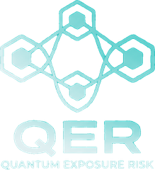

Data encrypted today can be harvested now and decrypted later. QER measures that exposure as the overlap of three clocks: when quantum capability arrives, when migration completes and when the data stops mattering. It is a pre-pilot framework for cyber insurers to evaluate, not a price.
A distribution over arrival times, updated as evidence changes. No single Q-Day date is needed.
How long vulnerable key establishment persists, judged on evidence rather than plans.
How long compromise still matters. Deleting your copy doesn't remove one harvested earlier.
External sources supply the cryptographic threat, the post-quantum standards and the migration guidance. The modelling propositions are QER's own and remain provisional. Citing a source does not imply its endorsement.
| Component | Source | Status |
|---|---|---|
| Quantum threat to public-key cryptography | Shor, 1994 | external foundation |
| Post-quantum standards | NIST FIPS 203, 204 and 205 | external standard |
| Transition timelines | NIST IR 8547; NCSC migration timelines (2025) | external guidance |
| Readiness and long-secrecy-life data | CISA, NSA and NIST, Quantum-Readiness (2023); NCSC, Next Steps (2023, updated 2024) | external guidance |
| Sector-level HNDL exposure | Garcia, Marcelino and Rufino, IEQ Technical Report 2026-S1 | related technical work |
| Cryptographic inventory tooling | Tenev, qrp-mcp (2026) | related technical work |
| Three-clock exposure structure | QER white paper | our approach |
| Evidence, coverage and expiry adjustments | QER white paper | our approach |
| Key-establishment and signature split | QER white paper | our approach |
| Common-driver and concentration treatment | QER white paper | our approach |
| Severity separation and RARI | QER white paper | our approach |
Related models include QARS (Electronics, 2025) and Rufino et al.'s IEQ (arXiv, 2026).
QER is mathematically specified and built to pass structural validation. It has not been empirically validated, because there is no body of HNDL claims to validate against yet. That is the gap a design partner closes.